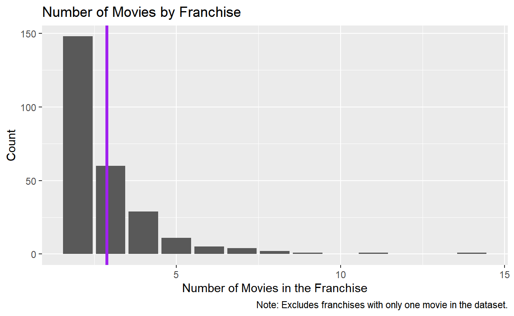
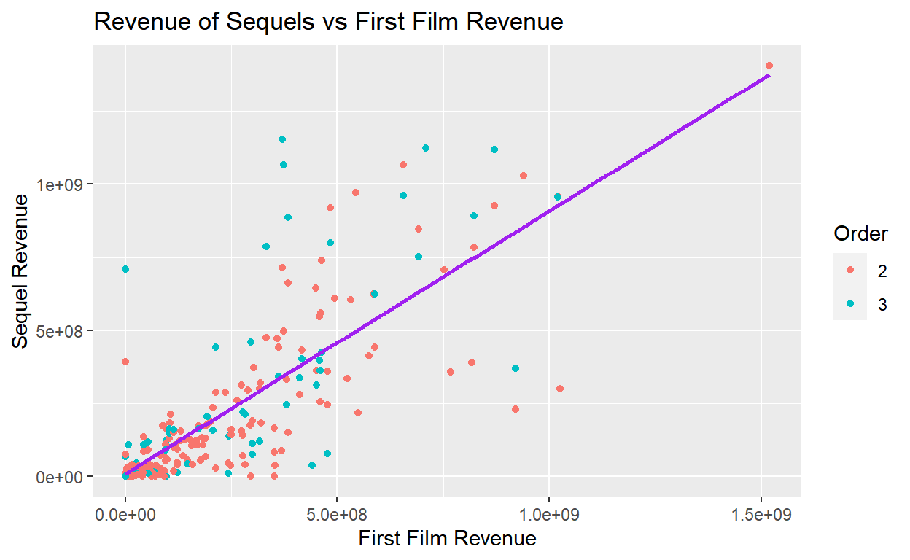

My final project
How do movie sequels compare to the original, in terms of box office return and audience reception? Does a better original film make for better sequels, or worse? Many people criticize the production of movie sequels, and yet studios keep making them. I hypothesize that better-received films will produce better-received and more profitable sequels. These films might continue the story of the franchise and be remembered just as well as the original, whereas the sequel to a poorly-received comedy might also be poorly-received, both critically and by people buying tickets. This data is worth analyzing because movies and sequels are a continually relevant part of global cultural consumption and inform how we think about politics, news, and the arts.
If box office return of the original and average box office return of sequels are positively correlated, then there is evidence for part of my hypothesis. If the IMDb score of the original and the average IMDb score of its sequels are positively correlated, there is evidence for the other part of my hypothesis. If there is a negative correlation or no correlation for either, my hypothesis will be weakened. I will focus only on the first, second, and third films in a series for convenience, but there are still interesting things to be discovered in the data despite this limitation.
There are 869 movies in this data set, which I formed by joining two datasets:
The data notes what franchise a film belongs to and the order in which it was released. For example, the original “Halloween” movie is given a value in the “Order” column of 1. The explanatory variables in this case are the box office revenue of the original, measured in dollars, and the IMDb score of the original, measured on a scale of 1 to 10 (with 10 being the best). The response variables are the box office revenue and IMDb scores of the original film’s sequels. Since some sequels might be better-received than others, I will take the average gross box office return and IMDb score of the entire franchise after the first film. Note that for movies released before IMDb existed the score is retroactive and may reflect modern consumer tastes rather than the tastes of people who went to see the movie in theaters.
movies <- read_csv("movies_metadata.csv")|>
select(budget, overview, title, revenue, release_date, runtime)|>
mutate(release_date = as.character(release_date))
sequels <- read_csv("Sequels/priyankad0993-sequels/Movies - Cleaned.csv")
sequels|>
filter(`Movie Series` == "A Nightmare on Elm Street")# A tibble: 6 x 12
Title Relea~1 Year Descr~2 URL IMDb ~3 Runti~4 Genres Num V~5
<chr> <chr> <dbl> <lgl> <chr> <dbl> <dbl> <chr> <dbl>
1 A Nightm~ 31-10-~ 1984 NA http~ 7.5 91 Horror 198163
2 A Nightm~ 31-10-~ 1985 NA http~ 5.5 87 Horror 59000
3 A Nightm~ 27-02-~ 1987 NA http~ 6.6 96 Fanta~ 67906
4 A Nightm~ 19-08-~ 1988 NA http~ 5.7 93 Horror 48140
5 A Nightm~ 11-08-~ 1989 NA http~ 5.2 89 Fanta~ 39327
6 A Nightm~ 27-04-~ 2010 NA http~ 5.2 95 Crime~ 90163
# ... with 3 more variables: Directors <chr>, `Movie Series` <chr>,
# Order <dbl>, and abbreviated variable names 1: `Release Date`,
# 2: Description, 3: `IMDb Rating`, 4: `Runtime (mins)`,
# 5: `Num Votes`movies_sequels <- sequels|>
left_join(movies, by = c("Title" = "title", "Runtime (mins)" = "runtime"))|>
select(Title, `Movie Series`, `IMDb Rating`, Order, budget, overview, revenue, `Runtime (mins)`)|>
mutate(budget = as.integer(budget),
revenue = as.integer(revenue),
Order = as.character(Order))|>
rename(series = `Movie Series`,
rating = `IMDb Rating`)
movies_sequels|>filter(series == "A Nightmare on Elm Street")# A tibble: 6 x 8
Title series rating Order budget overv~1 revenue Runti~2
<chr> <chr> <dbl> <chr> <int> <chr> <int> <dbl>
1 A Nightmare on E~ A Nig~ 7.5 1 1.8e6 Teenag~ 2.55e7 91
2 A Nightmare on E~ A Nig~ 5.5 2 3 e6 A new ~ 3.00e7 87
3 A Nightmare on E~ A Nig~ 6.6 3 5 e6 It's b~ 4.48e7 96
4 A Nightmare on E~ A Nig~ 5.7 4 NA <NA> NA 93
5 A Nightmare on E~ A Nig~ 5.2 5 NA <NA> NA 89
6 A Nightmare on E~ A Nig~ 5.2 6 3.5e7 The fi~ 1.16e8 95
# ... with abbreviated variable names 1: overview,
# 2: `Runtime (mins)`a) Average Number of Movies in a Series
In this data set, movies are grouped by series, and each series has a certain number of movies. Some series have many sequels, and others are “one-and-done,” so to speak; there is only one movie in the series. The average number of movies in series that have sequels is about 2.88. You can see on the histogram below that many series have two or three movies, whereas some have 10 or more. For the purposes of this project, I will be focusing on the first, second, and third films in a series.
numbermovies <- movies_sequels|>
group_by(series)|>
summarize(number_of_movies = n())|>
filter(number_of_movies > 1)
mean(numbermovies$number_of_movies)[1] 2.881679numbermovies_plot <- numbermovies|>
ggplot(mapping = aes(x = number_of_movies))+
geom_bar()+
labs(
title = "Number of Movies by Franchise",
x = "Number of Movies in the Franchise",
y = "Count",
caption = "Note: Excludes franchises with only one movie in the dataset."
)+
geom_vline(xintercept = mean(numbermovies$number_of_movies), color = "purple", size = 1.25)
numbermovies_plot
b) Box Office Return (General)
There is a strong positive correlation (0.7784) between a movie’s budget and its box office return. As a movie’s budget increases, it will generally make more money at the box office. Note that I filtered both the budget and revenue of a film to be greater than $10,000 to avoid capturing movies that did not get a theatrical release, or whose budgets are unknown.
revenueplot <- movies_sequels|>
drop_na()|>
filter(budget > 10000 | revenue > 10000)|>
ggplot(mapping = aes(x = budget, y = revenue, color = Order))+
geom_point()+
geom_smooth(method = "lm", se = FALSE, color = "purple")+
labs(title = "Budget vs Box Office Revenue",
x = "Budget",
y = "Revenue"
)+
scale_x_log10()+
scale_y_log10()
revenueplotcor(movies_sequels$budget, movies_sequels$revenue, use = "pairwise")[1] 0.7783911movies_sequels <- movies_sequels|>
mutate(sequel_category = case_when(
Order == 1 ~ "First",
Order == 2 ~ "Second",
Order == 3 ~ "Third",
Order == 4 ~ "Fourth",
Order == 5 ~ "Fifth",
Order == 6 ~ "Sixth",
Order == 7 ~ "Seventh",
Order == 8 ~ "Eighth",
Order >= 9 ~ "Ninth +"),
is.sequel = if_else(Order == 1, "No", "Yes")
)
has_sequels_tibble <- movies_sequels|>
group_by(series)|>
summarize(number_of_movies = n())|>
mutate(series.has.sequels = if_else(number_of_movies > 1, "Yes", "No"))
movies_sequels_new <- movies_sequels|>
inner_join(has_sequels_tibble, by = "series")c) Box Office Return for Sequels vs Original
The model predicts that, when the first film has a revenue of zero,
The box-office revenue of sequels in a series has a strong positive correlation (r = 0.7753) with the box-office revenue of the first film in the series: as the revenue of the first film increases, so, too, does the sequels’ revenue. The slope of the least-squares regression line is 0.9, meaning that when the revenue of an original or first film increases by one dollar, the sequel revenue will increase by about $0.90 on average. This result is statistically significant because p < 0.05. According to the r-squared value, about 60.1% of the variation in the data is explained by this model. However, I don’t think there is a causal relationship between the first film’s revenue and the sequel revenue – in other words, a lot of revenue for the original film does not cause the sequels to have higher revenue. Perhaps there are other factors (e.g. critical reception) that influence the sequels’ reception.
firstfilm <- movies_sequels_new|>
drop_na()|>
filter(series.has.sequels == "Yes")|>
group_by(series, Order)|>
summarize(first_film_revenue = revenue,
first_film_imdb = rating,
first_film_budget = budget)|>
filter(Order == 1)
sequelfilms <- movies_sequels_new|>
drop_na()|>
filter(series.has.sequels == "Yes")|>
group_by(series, Order)|>
summarize(sequels_revenue = revenue,
sequels_imdb = rating,
sequels_budget = budget)|>
filter(Order == 2 | Order == 3)
first_second_third <- firstfilm|>
inner_join(sequelfilms, by = c("series"))|>
rename(Order = Order.y)|>
filter(first_film_revenue > 10000 | sequels_revenue > 10000)
first_second_third# A tibble: 212 x 9
# Groups: series [159]
series Order.x first~1 first~2 first~3 Order seque~4 seque~5
<chr> <chr> <int> <dbl> <int> <chr> <int> <dbl>
1 101 Dalmatia~ 1 3.21e8 5.7 5.4e7 2 1.84e8 4.9
2 12 Rounds 1 1.73e7 5.6 2 e7 2 0 5.3
3 21 Jump Stre~ 1 2.02e8 7.2 4.2e7 2 1.88e8 7
4 A Nightmare ~ 1 2.55e7 7.5 1.8e6 2 3.00e7 5.5
5 A Nightmare ~ 1 2.55e7 7.5 1.8e6 3 4.48e7 6.6
6 Ace Ventura 1 1.07e8 6.9 1.5e7 2 2.12e8 6.4
7 Agent Cody B~ 1 5.88e7 5 2.8e7 2 2.88e7 4.6
8 Alice in Won~ 1 1.03e9 6.4 2 e8 2 2.99e8 6.2
9 Alien 1 1.05e8 8.4 1.1e7 2 1.83e8 8.3
10 Alvin and th~ 1 3.61e8 5.2 6 e7 2 4.43e8 4.5
# ... with 202 more rows, 1 more variable: sequels_budget <int>, and
# abbreviated variable names 1: first_film_revenue,
# 2: first_film_imdb, 3: first_film_budget, 4: sequels_revenue,
# 5: sequels_imdbsequel_revenue_plot <- first_second_third|>
ggplot(first_second, mapping = aes(x = first_film_revenue, y = sequels_revenue))+
geom_point(mapping = aes(color = Order))+
geom_smooth(method = "lm", se = FALSE, color = "purple")+
labs(
title = "Revenue of Sequels vs First Film Revenue",
x = "First Film Revenue",
y = "Sequel Revenue"
)
sequel_revenue_plot
lm_fst <- lm(sequels_revenue ~ first_film_revenue, data = first_second_third)
cor(first_second_third$first_film_revenue, first_second_third$sequels_revenue)[1] 0.7753265glance_lm_fst <- glance(lm_fst)|>
select(r.squared)
knitr::kable(glance_lm_fst, col.names = c("R-Squared"), digits = 3)| R-Squared |
|---|
| 0.601 |
lm_fst_tidy <- tidy(lm_fst)
knitr::kable(lm_fst_tidy, col.names = c(
"Term",
"Estimate",
"Standard Error",
"Statistic",
"P-Value"
), digits = 3)| Term | Estimate | Standard Error | Statistic | P-Value |
|---|---|---|---|---|
| (Intercept) | 8339625.8 | 18375384.900 | 0.454 | 0.65 |
| first_film_revenue | 0.9 | 0.051 | 17.790 | 0.00 |
d) Multiple Regression Including First Film Reception
When I controlled for the IMDb score of the first film, the adjusted R-squared value increased slightly from the R-squared value of the previous model (0.604 > 0.601). The model predicts that with every one-dollar increase in first-film revenue the sequel film revenue will increase by $8.65 on average when the first film’s IMDb score is held constant. The p-value for this result is less than 0.05, so we know that it is significant.
The model also predicts that with every 1-point increase in the first film’s IMDb score sequel revenue will increase by about $28,000,000 on average. However, the p-value for this result is greater than 0.05 (0.067 > 0.05), meaning the result is not statistically significant. Combined with the very small increase in adjusted R-squared, this large p-value leads me to believe that there is another confounding variable present in the data set.
lm_reception <- lm(sequels_revenue ~ first_film_revenue + first_film_imdb, data = first_second_third)
glance_lm_reception <- glance(lm_reception)|>
select(adj.r.squared)
knitr::kable(glance_lm_reception, col.names = c("Adjusted R-Squared"), digits = 3)| Adjusted R-Squared |
|---|
| 0.604 |
lm_reception_tidy <- tidy(lm_reception)
knitr::kable(lm_reception_tidy, col.names = c(
"Term",
"Estimate",
"Standard Error",
"Statistic",
"P-Value"
), digits = 3)| Term | Estimate | Standard Error | Statistic | P-Value |
|---|---|---|---|---|
| (Intercept) | -1.815625e+08 | 1.049112e+08 | -1.731 | 0.085 |
| first_film_revenue | 8.650000e-01 | 5.400000e-02 | 16.108 | 0.000 |
| first_film_imdb | 2.863007e+07 | 1.557490e+07 | 1.838 | 0.067 |
e) Multiple Regression Including Reception of Both First Film and Sequel Films
I controlled for the sequel films’ IMDb score because I realized that audience reception to the sequel film itself may be a better predictor of its box office return than the success of prior films. Immediately, we can see that the coefficient for the variable first_film_revenue decreased from 8.65 in the previous model to 8.60 in this model. The model predicts that, when the IMDb scores of the first film and sequels are held constant, a one-dollar increase in the revenue of the first film will result in an $8.60 increase in the revenue of the sequel on average. This result is significant because its p-value is almost zero (and therefore is less than 0.05). We learned in lecture that a decrease in the initial beta-value could mean that one of the other variables in multiple regression is a confounder.
The model also predicts that, when first film revenue and sequel IMDb scores are held constant, a 1-point increase in the first film’s IMDb score will result in about a $38,000,000 increase in sequel film revenue on average. Unlike in the previous model, the p-value for this coefficient is less than 0.05, so we can say that it is a significant result.
Finally, the addition of the sequel film IMDb score in multiple regression led to an increase in the adjusted R-squared from 0.604 to 0.666. 66.6% of the variation in this data is explained by the model including first film revenue, first film IMDb score, and the sequels’ IMDb score. The model therefore explains more variation in the data when sequel films’ IMDb scores are included in regression. The model predicts that a 1-point increase in a sequel film’s IMDb score will result in about a $93,000,000 increase in sequel film revenue on average when first film revenue and first film IMDb scores are held constant. The impact of an increase in sequel film’s IMDb score on sequel revenues is much greater (in terms of sheer dollar amount) than an increase in the IMDb score of the first film in a series. I
lm_reception2 <- lm(sequels_revenue ~ first_film_revenue + first_film_imdb + sequels_imdb, data = first_second_third)
glance_lm_reception2 <- glance(lm_reception2)|>
select(adj.r.squared)
knitr::kable(glance_lm_reception2, col.names = c("Adjusted R-Squared"), digits = 3)| Adjusted R-Squared |
|---|
| 0.666 |
lm_reception2_tidy <- tidy(lm_reception2)
knitr::kable(lm_reception2_tidy, col.names = c(
"Term",
"Estimate",
"Standard Error",
"Statistic",
"P-Value"
), digits = 3)| Term | Estimate | Standard Error | Statistic | P-Value |
|---|---|---|---|---|
| (Intercept) | -2.646708e+08 | 97196950.83 | -2.723 | 0.007 |
| first_film_revenue | 8.060000e-01 | 0.05 | 16.060 | 0.000 |
| first_film_imdb | -3.812917e+07 | 17769877.16 | -2.146 | 0.033 |
| sequels_imdb | 9.291971e+07 | 14687750.64 | 6.326 | 0.000 |
modelsummary(list(lm_fst, lm_reception, lm_reception2),
gof_map = c("nobs", "r.squared","adj.r.squared"))| Model 1 | Model 2 | Model 3 | |
|---|---|---|---|
| (Intercept) | 8339625.783 | -181562544.549 | -264670763.206 |
| (18375384.900) | (104911164.932) | (97196950.826) | |
| first_film_revenue | 0.900 | 0.865 | 0.806 |
| (0.051) | (0.054) | (0.050) | |
| first_film_imdb | 28630068.648 | -38129169.610 | |
| (15574895.401) | (17769877.160) | ||
| sequels_imdb | 92919710.244 | ||
| (14687750.641) | |||
| Num.Obs. | 212 | 212 | 212 |
| R2 | 0.601 | 0.607 | 0.671 |
| R2 Adj. | 0.599 | 0.604 | 0.666 |